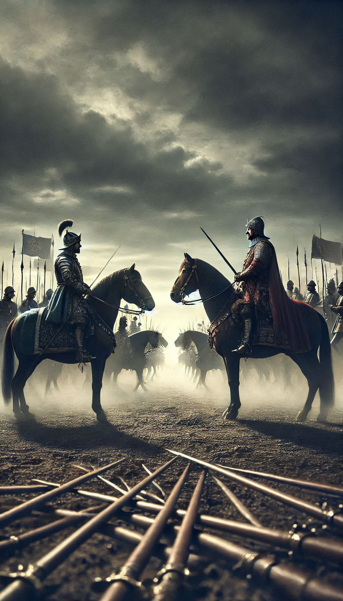

Fatih ve Vlad...
"Fatih ve Vlad: Tarihin Kanla Yazılan Hesaplaşması"
II. Mehmet ve Vlad Tepeş arasındaki savaş, 1462 yılında Osmanlı İmparatorluğu ile Eflak Prensliği arasında gerçekleşmiştir. Bu mücadele, Vlad’ın Osmanlı otoritesine başkaldırması ve Eflak’ta uyguladığı korku dolu yönetimle tarih kitaplarında büyük bir yer edinmiştir.Vlad Tepeş, Eflak bölgesinin voyvodasıydı ve Osmanlı’ya bağlı bir prenslik olan Eflak’ta, Osmanlı Padişahı II. Mehmet’e yıllık haraç ödemekle yükümlüydü ama bu haraç yaklaşık 5 yıldır ödenmiyordu.Vlad, gençlik yıllarında Osmanlı sarayında rehin olarak tutulmuş, burada Osmanlı tarafından eğitilmişti. Ancak voyvoda olduktan sonra Osmanlı’ya karşı sert bir tutum sergilemeye başladı.1461 yılında Fatih Sultan Mehmet, Vlad’ın Osmanlı’ya bağlı kalacağına dair yeminini kabul etmişti. Ancak Vlad, bu yemine sadık kalmadı. Osmanlı elçilerini kazıklara geçirerek öldürdü ve bu hareketin sonucu olarak Kazıklı Voyvoda ünvanına sahip oldu.Osmanlı sınır bölgelerine akınlar yaparak köyleri yağmaladı ve binlerce insanı katletti. Bu hareketler, Osmanlı’yı bölgedeki düzeni sağlamak için bir sefere zorladı.1462 yılında Fatih Sultan Mehmet, Vlad Tepeş’in isyanını bastırmak ve Eflak’taki Osmanlı otoritesini yeniden kurmak amacıyla büyük bir orduyla sefere çıktı. Vlad ise Osmanlı’nın karşısına doğrudan çıkmak yerine vur kaç taktikleri kullanmayı tercih etti. Gece baskınları ve ani saldırılarla Osmanlı ordusuna zarar vermeye çalıştı.Osmanlı ordusu Vlad’ın başkenti Targovişte’ye ulaştığında, tarihte “ölüm ormanı” olarak bilinen korkunç bir manzarayla karşılaştı. Vlad, Osmanlı askerlerini ve kendi halkından bazı isyancıları kazıklara geçirerek bu bölgeye bırakmıştı. Binlerce insanın cesedi kazıklara dizilmiş bir şekilde bulunuyordu. Bu vahşet, Osmanlı ordusunu psikolojik olarak etkilemeyi amaçlıyordu ancak II. Mehmet’in ordusu bu korkutma yöntemlerine boyun eğmedi ve ilerlemeye devam etti.Fatih Sultan Mehmet’in liderliğindeki Osmanlı ordusu, Vlad’ın kuvvetlerini birçok cephede mağlup etti. Vlad, Osmanlı karşısında büyük bir yenilgiye uğradı ve Macaristan’a kaçmak zorunda kaldı.
Osmanlı, Eflak’ta düzeni sağladı ve Vlad’ın yerine onun kardeşi Radu’yu voyvoda olarak atadı. Radu, Osmanlı’ya sadık bir yöneticiydi ve Eflak’ta Osmanlı hakimiyetini yeniden tesis etti.Bu savaş, Osmanlı İmparatorluğu’nun Balkanlar’daki otoritesini pekiştirmiştir. Vlad Tepeş ise bölgedeki gücünü kaybetmiş, bir süre Macaristan’da esir tutulmuş ve daha sonra tekrar Eflak tahtına geçmeye kalkmıştır ancak sonunda öldürülmüş ve siyasi etkisi tamamen sona ermiştir.Fatih Sultan Mehmet’in bu seferi, Osmanlı’nın Balkanlarda stratejik hâkimiyetini sağlamlaştırdığı ve Vlad Tepeş’in korku dolu yönetimine son verdiği önemli bir savaş olmuştur.
EREN BOZKURT